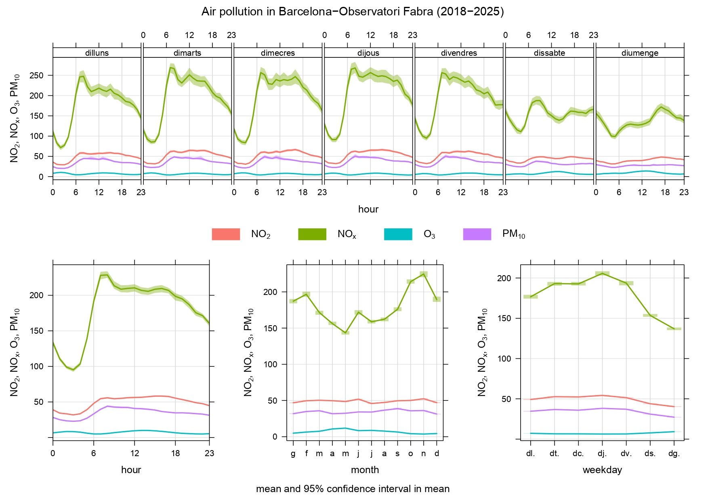
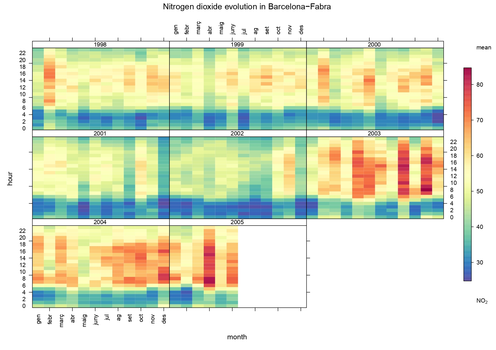

<h1 style="text-align: center; margin-top: 40px;">Research Visualizations</h1>

<div style="display: flex; flex-wrap: wrap; justify-content: space-around; gap: 20px; padding: 20px;">

  <div style="flex: 1; min-width: 300px; border: 1px solid #ddd; border-radius: 10px; padding: 15px; background: #f9f9f9;">
    <h4 style="margin-top: 0;">1. General Pollutant Cycles (NOx, NO2, O3, PM10)</h4>
    
  </div>

  <div style="flex: 1; min-width: 300px; border: 1px solid #ddd; border-radius: 10px; padding: 15px; background: #f9f9f9;">
    <h4 style="margin-top: 0;">2. Ozone (O3) and Particulate Matter (PM10)</h4>
    
  </div>

  <div style="flex: 1; min-width: 300px; border: 1px solid #ddd; border-radius: 10px; padding: 15px; background: #f9f9f9;">
    <h4 style="margin-top: 0;">3. Nitrogen Dioxide (NO2) Heatmap Evolution</h4>
    
  </div>

